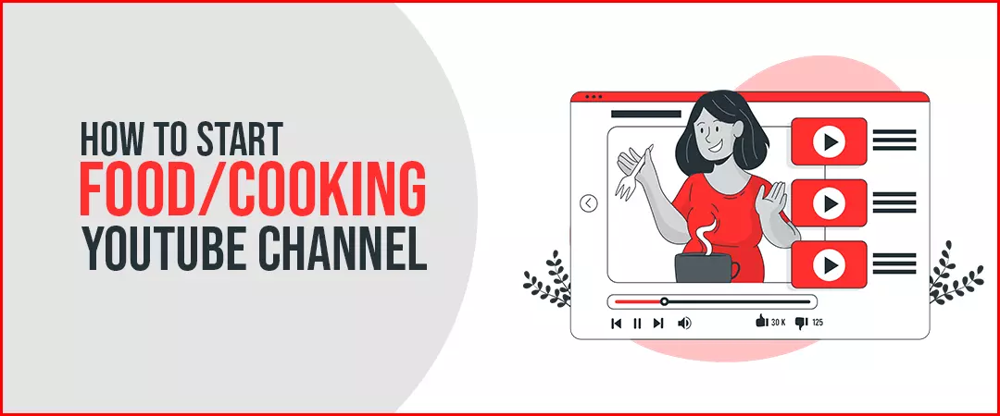
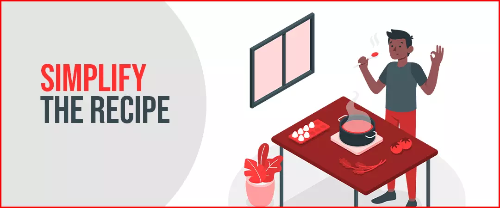
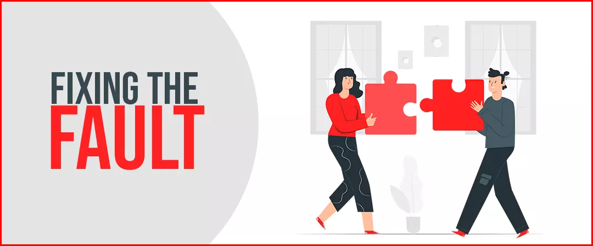
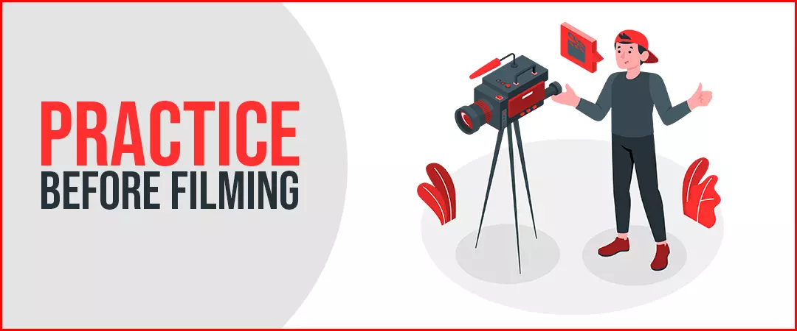
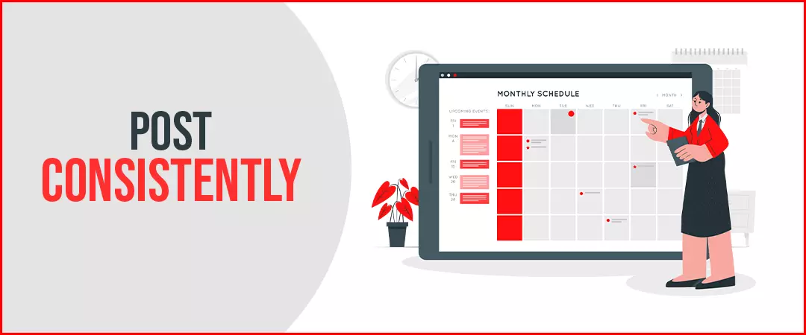
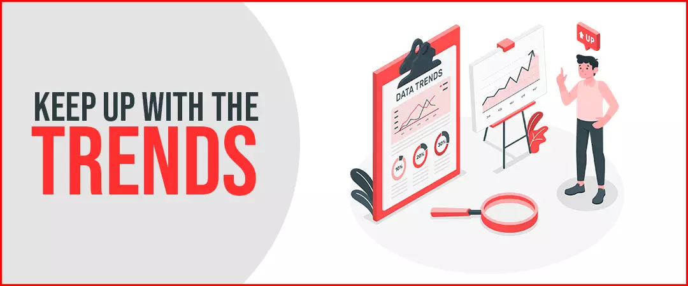
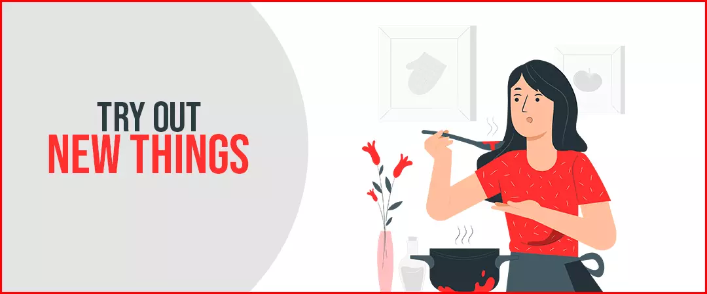
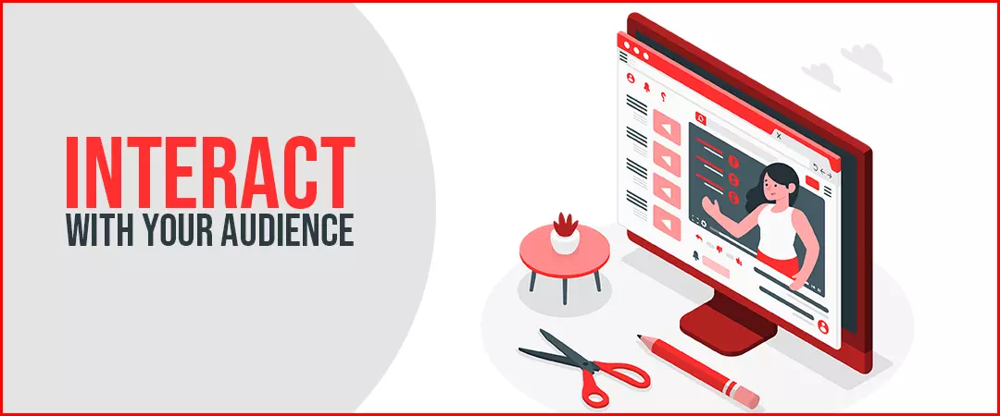
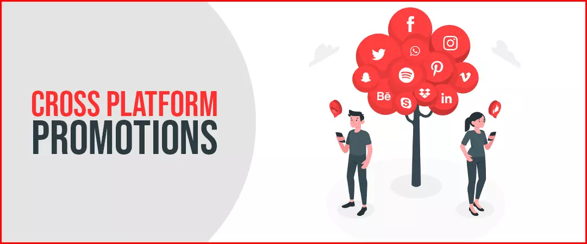

It’s true that YouTube is replacing television slowly in our lives, and that remains true even for food and cooking channels! So, that is where food bloggers and chefs are aiming for now.
Sure, you can work in a good reputed restaurant and earn a six figures income annually, but ask yourselves do you get to really flex your muscles in terms of creativity? The answer remains no. But with YouTube, you can do all those things from the comfort of your own kitchen!
How to start a Food/ Cooking YouTube Channel?

If you’re wondering how will you start a food channel, let’s break it down for you. The first thing you got to do is check out the competition out there. Scour through your competitors’ channel and videos, find out their competitive advantage! Next thing that you have to do is figure out what will make you stand apart from the rest of the creators in your niche and work that into your videos. Remember, you are here to teach your audience, your videos should be such that can be easily followed through.
Here are 10 tips that will help you grow your YouTube Food channel:
Simply the recipe

With every recipe you make, make sure you break it down and make it as simple as possible with ingredients that can easily find! This is the easiest way to attract viewers and subscribers and get you food channel monetized. You can even buy Real Subscribers for your food channel and grow your Youtube channel.
Fixing the fault

It’s only natural to mess up a dish while filming a video. But so, do many people in their kitchens! Always keep solutions to all the possible mess ups ready just in case you might need one! This will not only help your audience but will make you more relatable to them.
Practice before filming

As stated earlier, along with having fun with your creativity, you are here to teach your audience. Hence, practice how you are going to talk to your viewers while cooking and maintaining a natural flow of the video. This will make your viewers feel more connected to you.
Plan your video
Before filming your video, it is essential that you plan the sequence of the events in your video. Plan when you will make eye contact with the viewer, what shots of the food will be taken, hand actions, facial expressions, the facts and techniques you will be sharing during the video. This will make your video look more professional and help you increase youtube subscribers.
Post consistently

Create a schedule for your food channel according to your capability and stick to it. Regularly upload food and cooking videos to your YouTube channel. This is a great way to retain your subscribers and more gain legit subscribers. Posting consistently also reflects well in the YouTube algorithm.
Press on YouTube SEO
Well, just making good quality videos is not enough to be at the top of the game now a days. To rank among the top food and cooking videos you have to hustle. Find powerful keywords and optimize your video title, tags and description around these keywords for better ranking. Design a custom-made thumbnail to improve your CTR. This will make your videos easier to be discovered and help you build your food YouTube channel.
Keep up with the trends

Thanks to the reachability of internet today, if something goes viral, it reaches all the corners of world superfast and then everyone is trying it out. Similarly, you also have to keep up with the trending topics on your food channel. This will help you attract new viewers towards your food channel and build your subscriber base and Youtube videos organic reach.
Try out new things

Don’t be afraid to step out of the conventional ways and try something new! That’s the advantage of having your own YouTube food channel. By trying out new and creative things on your channel you find a way to stand apart from your competitors.
Interact with your audience

Always engage with your audience and show them they are important to you, after all your food channel is nothing without your viewers and subscribers. Reply to as many comments as possible. Heart your favorite comments. Ask your viewers what they thought of the video and ask for what else they would like to watch. This increases your engagement ratio and improves the ranking of your videos.
Cross platform promotion

When you publish a food video, make sure you promote it at as many platforms to gain maximum traffic. Leverage the power of social media platforms like Pinterest, Instagram and Tumblr. Post pictures of your dishes and encourage your followers to watch the recipe. This will help you increase your views and get active subscribers.
The time for food recipes and cooking shows to come to YouTube is not coming. In fact, it is here, and with the help of the above- mention proven strategies, anyone start and grow food YouTube channel and become a food influencer. If you have a knack for curating amazing recipes, ramping up a basic recipe or playing flavour in your kitchen and wish to share your cooking skills with an audience, YouTube is an amazing platform for you to start a food / cooking channel, and with our tired methods you can easily grow your foo YouTube channel in 2021.
With these 10 tips you can not only start your YouTube food channel but work on your own terms and grow your food channel in record time! Start today and watch your journey shine.